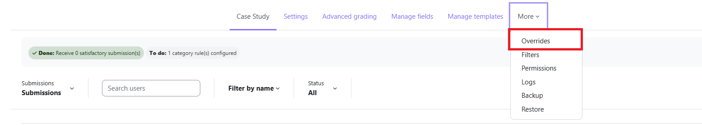
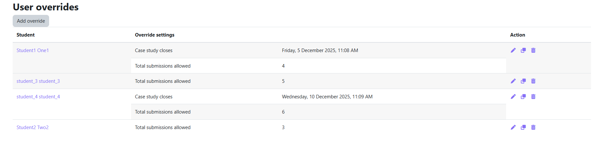
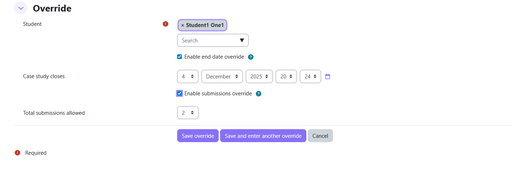

User Overrides
User overrides let you grant individual students a personalised deadline or a different number of resubmission attempts — without affecting the activity settings for everyone else.
mod/casestudy:manageoverrides — Editing Teacher or Manager role.Accessing overrides
Inside the Case Study activity, click Overrides in the activity navigation menu.

Overrides list page
The list shows all active overrides for this activity.

| Column | Description |
|---|---|
| Student | The student who has the override |
| Case Study Closes | Their personalised deadline (shown only if set) |
| Total Attempts Allowed | Their personalised attempt limit (shown only if set) |
| Actions | Edit / Duplicate / Delete |
Adding an override
Override edit form

Select the student from the dropdown. The list shows all users with the mod/casestudy:submit capability (typically all enrolled students).
Tick the checkbox to enable a personalised deadline. A date/time picker appears — set the student's extended deadline.
Example: The activity closes 30 June. You grant one student an override closing 7 July. Only that student can submit until 7 July; everyone else is locked out after 30 June.
Tick the checkbox to enable a personalised attempt limit. A number input appears — set how many times (1–10) this student may resubmit.
Editing an override
Click Edit next to the override. The same form opens pre-filled with the current values. Modify and click Save.
Duplicating an override
Click Duplicate next to an override to create a copy for a different student.
The edit form opens with the same override values but with the student field cleared. Select a new student and save.
Deleting an override
Click Delete and confirm. Once deleted, the student immediately reverts to the default activity settings.
How overrides interact with the activity
When an override exists for a student, the system uses the override values instead of the activity-level values for that student only:
- Due date: The override timeclose replaces the activity timeclose for all deadline checks.
- Attempt limit: The override maxattempts replaces the activity maxattempts when calculating remaining submissions.
Overrides are invisible to students — they simply experience the extended deadline or additional attempts without any indication that an override exists.